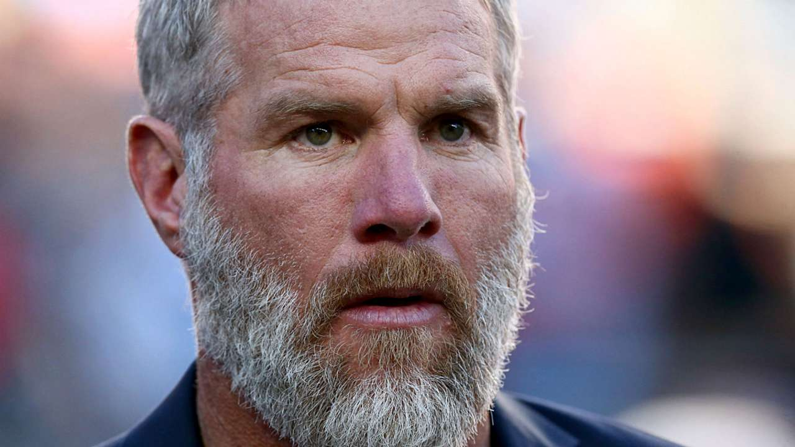

Does Favre Have Dementia?
- 
By now, you must have heard Brett Favre's comments on Deshaun Watson. Just in case, I'll give a quick summary. He claims that he's "old school" and stated that athletes make too much money to give an opinion. He then went on to say that he should just show up and honor the contract.
That's right. The same guy who used to hold the Packers hostage year after year when deciding if he'll come back to play (on his terms), before eventually forcing a trade, is now part of the "shut up and play militia."
After being roasted by just about everyone in the media, Watson's agent, and social media, he's yet to acknowledge his hypocrisy. Maybe he forgot he that he made the comments just like he possibly forgot that his previous actions were contradictory to his comments.
Source